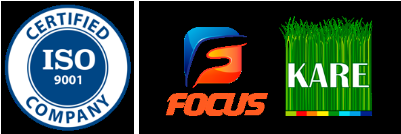

FOCUS KARE
Комплексные решения по защитным покрытиям на базе материалов: антикоррозийные покрытия МИРАКОР®, защитные покрытия для бетона КАНКАР®, гидроизоляция и герметики РУМАСТ®, огнебиозащитные пропитки ВУДРАКС®, огнезащитные составы FOCUS FLAMER®
Официальный дилер материалов ООО «АнКорИнжиниринг»
Обращайтесь к нашим специалистам за полными консультациями по применению материалам и логистике: ankorr.ru@gmail.com; + 7 908 276 52 05
|
Антикоррозионные и химстойкие покрытия |
|
|
МИРАКОР® УР-150 |
Эфир-уретановая эмаль повышенной прочности.
Однокомпонентный жидкий материал на основе эластичных полиуретановых смол. Высокая скорость полимеризации под действием влажности воздуха. Бесшовное прочное эластичное покрытие, устойчивое в широком диапазоне температур. Отличная адгезия к большинству строительных материалов. Исключительно высокая химическая и биологическая устойчивость, абразивоустойчивость. Нетоксичен после полимеризации, обеспечивает абсолютную безопасность в контакте с питьевой водой и пищевыми продуктами.
Используется для защиты и предотвращения коррозии конструкций и изделий из металла. Может применяться при контакте с питьевой водой и пищевыми продуктами - для поверхностной обработки и защиты резервуаров с питьевой водой, спиртами и безалкогольными напитками, вином, хранилищ с химически, биологически и радиационно-агрессивными продуктами, а также очистных сооружений.
Колеровка по RAL |
|
МИРАКОР® УР-350 |
Эфир-уретановый лак повышенной прочности
Однокомпонентный жидкий материал на основе эластичных полиуретановых смол. Высокая скорость полимеризации под действием влажности воздуха. Бесшовное прочное эластичное покрытие, устойчивое в широком диапазоне температур. Отличная адгезия к большинству строительных материалов. Исключительно высокая химическая и биологическая устойчивость, абразивоустойчивость. Нетоксичен после полимеризации, обеспечивает абсолютную безопасность в контакте с питьевой водой и пищевыми продуктами.
Используется для защиты и предотвращения коррозии конструкций и изделий из металла. Может применяться при контакте с питьевой водой и пищевыми продуктами - для поверхностной обработки и защиты резервуаров с питьевой водой, спиртами и безалкогольными напитками, вином, хранилищ с химически, биологически и радиационно-агрессивными продуктами, а также очистных сооружений.
Бесцветный |
|
МИРАКОР® УР-150-УФ |
Атмосферостойкая эфир-уретановая эмаль повышенной прочности
Эмаль с высоким блеском, обладающая хорошими стойкостью глянца и цветостойкостью. Покрытие обладает высокими декоративными свойствами, стойкое к УФ- излучению. Имеет отличную адгезию к большинству поверхностей.
Используется в качестве глянцевого декоративного финишного покрытия в средах с высокой степенью агрессивности. Обеспечивает антикоррозионную защиту металлических конструкций, эксплуатируемых в атмосферных условиях всех макроклиматических районов, типов атмосферы и категорий размещения по ГОСТ 15150- 69.
Колеровка по RAL Компонент А – ведро 17 кг, компонент Б – ведро 5 кг. |
|
МИРАКОР® УР-350-УФ |
Атмосферостойкий эфир-уретановый лак повышенной прочности
Лак с высоким блеском, обладающая хорошими стойкостью глянца. Покрытие обладает высокими декоративными свойствами, стойкое к УФ-излучению. Имеет отличную адгезию к большинству поверхностей.
Используется в качестве глянцевого финишного покрытия в средах с высокой степенью агрессивности. Обеспечивает антикоррозионную защиту металлических конструкций, эксплуатируемых в атмосферных условиях всех макроклиматических районов, типов атмосферы и категорий размещения по ГОСТ 15150-69.
Бесцветный Компонент А – ведро 17 кг, компонент Б – ведро 5 кг. |
|
МИРАКОР® УР-250-КН |
Карбонизированная антикоррозийная грунт-эмаль
Высокоэффективная грунт-эмаль, обладающая повышенной химостойкостью и гидрофобностью, стойкая к большинству агрессивных химических веществ. Выдерживает постоянное пребывание в жидкостной среде (воде, кислотах, щелочах, нефти) не менее 30 лет. Создает на поверхности ярко черное глянцевое покрытие.
Применяется в качестве защитного лакокрасочного покрытия для металлических поверхностей. Полностью высохшее покрытие обладает высокой прочностью, эластичностью, а также стойкостью к истиранию и химическому воздействию. Покрытие предназначено для эффективной защиты от коррозии и старения металлоконструкций и гидротехнических сооружений. Применяется для получения антикоррозионного, гидроизоляционного и износостойкого покрытия на поверхностях, подвергающихся воздействию пресной и морской воды, нефти и нефтепродуктов.
Черная глянцевая, оттенок не нормируется |
|
МИРАКОР® УР-260-ЦН |
Цинконаполненная антикоррозийная грунт-эмаль
Высокоэффективное высокопрочное и эластичное антикоррозийное покрытие для защиты металлических поверхностей. Антикоррозийные свойства материала не уступают по эффективности полноценному заводскому цинкованию. При нанесении на поверхность металла образует глянцевую пленку серого цвета. Может наноситься на поверхности, имеющие слой коррозионного налета толщиной до 0,2 мм.
Применяется в качестве защитного лакокрасочного покрытия для металлических поверхностей. Полностью высохшее покрытие обладает высокой прочностью, эластичностью, а также стойкостью к истиранию и химическому воздействию. Используется для получения антикоррозионного, гидроизоляционного и износостойкого покрытия на металлических поверхностях различного назначения.
Серая глянцевая, оттенок не нормируется |
|
МИРАКОР® УР-250-ФН |
Антикоррозийная грунт-эмаль с «железной слюдкой»
Высокоэффективное антикоррозийное покрытие для защиты металлических поверхностей. Покрытие стойкое в пресной и морской воде, в водных растворах солей, кислот и щелочей, в нефти и нефтепродуктах. При нанесении на поверхность металла образует глянцевую пленку темно-металлического цвета.
Антикоррозионная защита металлических конструкций и изделий, эксплуатируемых в атмосферных условиях всех макроклиматических районов, типов атмосферы и категорий размещения по ГОСТ 15150. Применяется в комплексных системах защиты в качестве промежуточного или покрывного слоя (при отсутствии или незначительной интенсивности УФ-излучения).
Темно-коричневая, с металлическим блеском |
|
МИРАКОР® УР-250-АН |
Антикоррозийная алюмонаполненная грунт-эмаль
Высокоэффективное антикоррозийное покрытие для защиты металлических поверхностей. Покрытие стойкое в пресной и морской воде, в водных растворах солей, кислот и щелочей, в нефти и нефтепродуктах. При нанесении на поверхность металла образует глянцевую серебристо-серую пленку.
Антикоррозионная защита металлических конструкций и изделий, эксплуатируемых в атмосферных условиях всех макроклиматических районов, типов атмосферы и категорий размещения по ГОСТ 15150. Применяется в комплексных системах защиты в качестве промежуточного или покрывного слоя (при отсутствии или незначительной интенсивности УФ-излучения).
Серебристо-серая, с металлическим блеском |
|
МИРАКОР® ЭП-250-ЦН |
Цинконаполненная антикоррозийная эпоксидная грунт-эмаль
Высокоэффективное антикоррозийное покрытие для защиты металлических поверхностей. Покрытие стойкое в пресной и морской воде, в водных растворах солей, кислот и щелочей, в нефти и нефтепродуктах. При нанесении на поверхность металла образует защитную пленку серого цвета.
Антикоррозионная защита металлических конструкций и изделий, эксплуатируемых в атмосферных условиях всех макроклиматических районов, типов атмосферы и категорий размещения по ГОСТ 15150. Применяется в комплексных системах защиты в качестве промежуточного или покрывного слоя. Антикоррозийные свойства материала не уступают по эффективности полноценному заводскому цинкованию.
Серая матовая, оттенок не нормируется |
|
МИРАКОР® ЭП-250-ФН |
Антикоррозийная эпоксидная грунт-эмаль с «железной слюдкой
Высокоэффективное антикоррозийное покрытие для защиты металлических поверхностей. Покрытие стойкое в пресной и морской воде, в водных растворах солей, кислот и щелочей, в нефти и нефтепродуктах. При нанесении на поверхность металла образует защитную пленку серого цвета.
Антикоррозионная защита металлических конструкций и изделий, эксплуатируемых в атмосферных условиях всех макроклиматических районов, типов атмосферы и категорий размещения по ГОСТ 15150. Применяется в комплексных системах защиты в качестве промежуточного или покрывного слоя
Серая матовая, оттенок не нормируется |
|
МИРАКОР® ЭП-250-АН |
Алюмонаполненная антикоррозийная эпоксидная грунт-эмаль
Высокоэффективное антикоррозийное покрытие для защиты металлических поверхностей. Покрытие устойчиво к проливам нефти, нефтепродуктов и химических реагентов. При нанесении на поверхность металла образует защитную пленку серого цвета.
Антикоррозионная защита металлических конструкций и изделий, эксплуатируемых в атмосферных условиях всех макроклиматических районов, типов атмосферы и категорий размещения по ГОСТ 15150. Используется для антикоррозийной защиты наружной поверхности трубопроводов тепловых сетей под теплоизоляцию при канальном способе прокладки. Применяется для защиты от коррозии металлоконструкций внутри и снаружи зданий и сооружений агропромышленного комплекса, в том числе с режимом влажной дезинфекции и в условиях воздействия среднеагрессивной атмосферы. Грунт-эмаль рекомендуется для окраски новых металлоконструкций, ремонтной окраски поверхностей с остатками плотно держащихся слоев ржавчины толщиной не более 50 мкм или старых покрытий ГФ-021, ФЛ-03К, ВЛ-023, а также других покрытий на эпоксидной и полиуретановой основе.
|
|
МИРАКОР® ЭП-150 |
Антикоррозионная эпоксидная грунт-эмаль
Двухкомпонентная, толстослойная, эпоксидная грунт- эмаль с фосфатом цинка и с отвердителем. Образует высокопрочный слой с высокой степенью антикоррозионной защиты.
Применяется в качестве грунтовки или межслойной краски в эпоксидных и полиуретановых системах для объектов, подвергающихся механическому и/или химическому воздействию. В качестве межслойной грунтовки для поверхностей, ранее окрашенных цинконасыщенными эпоксидными или цинкосиликатными красками. Рекомендуется для окраски мостов, транспортных средств, кранов, стальных мачт, конвейеров и других стальных конструкций, механизмов и оборудования. Обладает отличной адгезией к стальным, оцинкованным и алюминиевым поверхностям и короткой межслойной выдержкой.
Колеровка по RAL |
|
МИРАКОР® ПС-250-ЦН |
Полистирольная антикоррозийная грунт-эмаль.
Эмаль в виде жидкого однокомпонентного состава, готовая к использованию. Представляет собой электролитический цинк высокой степени химической чистоты, а также некоторых летучих веществ и связывающих их агентов. Это защитное тонкопленочное цинковое покрытие, которое очень хорошо защищает от коррозии любые металлы. Нанесенное цинковое покрытие в виде тонкой пленки имеет высокие антикоррозионные защитные свойства и хорошую адгезию к черным металлам. Обладает высокой эластичностью, не чувствительно к ударным и вибрационным воздействиям, устойчиво к истиранию. Устойчиво в пресной и морской воде, а также в водных растворах различных солей, в этиловом спирте и его водных растворах. Не токсично.
Используется в качестве защитного антикоррозионного покрытия по металлу (холодное цинкование), а также в качестве грунта под декоративные лакокрасочные материалы. Покрытие одновременно осуществляет и пассивную (барьерную) и активную (катодную) антикоррозионную защиту металлов.
Серый, Матовый |
|
FOCUS CORATEC |
Фосфатирующий модификатор ржавчины для обработки стальных, чугунных, оцинкованных и алюминиевых поверхностей перед нанесением ЛКМ. Представляет собой водный раствор ортофосфорной кислоты, ингибиторов коррозии и специальных целевых добавок |
|
Защита бетона |
|
|
КАНКАР® УР1 |
Эфир-уретановый грунт для пористых оснований.
Однокомпонентный жидкий материал на основе эластичных полиуретановых смол. Высокая скорость полимеризации под действием влажности воздуха. Отличная адгезия к большинству строительных материалов.
Используется в качестве грунта для защитных составов КАНКАР®, либо других согласованных с производителем. |
|
КАНКАР® УР2 |
Эфир-уретановый лак для пористых поверхностей.
Однокомпонентный жидкий материал на основе эластичных полиуретановых смол. Высокая скорость полимеризации под действием влажности воздуха. Образует бесшовное прочное эластичное покрытие, устойчивое в широком диапазоне температур. Отличная адгезия к большинству строительных материалов. Исключительно высокая химическая и биологическая устойчивость, абразивоустойчивость.
Используется для защиты и предотвращения эрозии конструкций и изделий из бетона, кирпича и пр., упрочнения и обеспыливания бетонных полов. Также применяется для поверхностной обработки и защиты резервуаров, хранилищ, мостовых и опорных конструкций, очистных сооружений. |
|
КАНКАР® УР3 |
Эфир-уретановая эмаль для пористых поверхностей.
Однокомпонентный жидкий материал на основе эластичных полиуретановых смол. Высокая скорость полимеризации под действием влажности воздуха. Образует бесшовное цветное прочное эластичное покрытие, устойчивое в широком диапазоне температур. Отличная адгезия к большинству строительных материалов. Исключительно высокая химическая и биологическая устойчивость, абразивоустойчивость.
Используется для защиты и предотвращения эрозии конструкций и изделий из бетона, кирпича и пр., упрочнения и обеспыливания бетонных полов. Также применяется для поверхностной обработки и защиты резервуаров, хранилищ, мостовых и опорных конструкций, очистных сооружений. |
|
КАНКАР® УР2-УФ |
Атмосферостойкий эфир-уретановый лак для пористых поверхностей.
Двухкомпонентный лак с высоким блеском и хорошей стойкостью глянца. Покрытие обладает высокими декоративными свойствами, стойкое к УФ-излучению. Имеет отличную адгезию к большинству поверхностей. Образует бесшовное прочное высокоглянцевое покрытие, устойчивое в широком диапазоне температур.
Используется в качестве глянцевого финишного покрытия конструкций и изделий из бетона, кирпича и пр., упрочнения и обеспыливания бетонных полов. Также применяется для поверхностной обработки и защиты резервуаров, хранилищ, мостовых и опорных конструкций. Обеспечивает защиту от разрушения конструкций и сооружений, эксплуатируемых в атмосферных условиях всех макроклиматических районов, типов атмосферы и категорий размещения по ГОСТ 15150-69. |
|
КАНКАР® УР3-УФ |
Атмосферостойкая эфир-уретановая эмаль для пористых поверхностей.
Двухкомпонентная эмаль с высоким блеском и хорошей стойкостью цвета и глянца. Покрытие обладает высокими декоративными свойствами, стойкое к УФ-излучению. Имеет отличную адгезию к большинству поверхностей. Образует бесшовное прочное высокоглянцевое покрытие, устойчивое в широком диапазоне температур. Отличная адгезия к большинству строительных материалов.
Используется в качестве глянцевого финишного покрытия конструкций и изделий из бетона, кирпича и пр., упрочнения и обеспыливания бетонных полов. Также применяется для поверхностной обработки и защиты резервуаров, хранилищ, мостовых и опорных конструкций. Обеспечивает защиту от разрушения конструкций и сооружений, эксплуатируемых в атмосферных условиях всех макроклиматических районов, типов атмосферы и категорий размещения по ГОСТ 15150-69.
Колерованный по RAL |
|
Гидроизоляция и герметики |
|
|
РУМАСТ® А |
Полимерная гидроизоляционная мастика.
Прочное и эластичное покрытие, устойчивое к низким температурам, различным атмосферным явлениям, затоплению водой и УФ-лучам. Образует бесшовную, декоративную, эластичную мембрану, предотвращает проникновение воды, защищает поверхность от разрушения и продлевает жизнь кровли. Экологически чистое.
Используется для гидроизоляции новых кровель (в том числе со сложными геометрическими формами), а также гидроизоляции крыш поверх старых рулонных мембран, обеспечивает перекрытие трещин до 0,5 мм. Также используется для гидроизоляции стен и напольных поверхностей внутри помещений с влажностью до 95%. РУМАСТ® А является финишным покрытием и не требует дополнительной защиты. Может наносится на любые заранее подготовленные поверхности (бетон, минеральные штукатурки, штукатурки на основе синтетических смол, кирпичную кладку и т.п.)
Белый полуматовый, возможна колеровка по RAL |
|
РУМАСТ® ПУ |
Полиуретановый гидроизоляционный состав.
Двухкомпонентная жидкая гидроизоляция холодного отверждения на основе тиолсодержащего полимера. Образует эластичный резиноподобный материал с высокими деформационными и прочностными свойствами, стойкий к вибрациям и атмосферным воздействиям, отличной адгезией к металлу, стеклу, бетону, дереву.
Предназначен для гидроизоляции, пароизоляции и защиты от коррозии сложных и динамичных железобетонных, бетонных и железных конструкций: плоские кровли, резервуары, подвалы, подземные сооружения и туннели, гидротехнических сооружений, градирен, каналов, для гидроизоляции под стяжку и плитку, для ремонта старой битумной гидроизоляции. Благодаря текучести, состав может использоваться в труднодоступных узлах со сложной конфигурацией шва, позволяет производить наливную гидроизоляцию больших площадей. Обладает умеренной маслобензостойкостью (при периодическом воздействии), высокой адгезией к металлическим поверхностям, высокой стойкостью к вибрационным нагрузкам. Допустим длительный контакт с грунтовыми водами, слабоагрессивными средами, морской водой. |
|
РУМАСТ® ГР |
Шовный уретановый строительный герметик.
Двухкомпонентная тиксотропная легко наносимая паста. Образует эластичный резиноподобный материал с высокими деформационными и прочностными свойствами, стойкий к вибрациям и атмосферным воздействиям, отличной адгезией ко всем строительным материалам. Не содержит в своем составе растворителей, материал устойчив к воздействию климатических факторов.
Используется для герметизации деформационных швов строительных конструкций с деформацией до 50%, швов бетонных полов, герметизации стыков, щелей, трещин. Не имеет усадки.
Серый. Колеровка по RAL |
|
РУМАСТ® ЛТ |
Полисульфидный (тиоколовый) строительный герметик.
Двухкомпонентный строительный герметик холодного отверждения на основе тиолсодержащего полимера. Образует эластичный резиноподобный материал с высокими деформационными и прочностными свойствами, стойкий к вибрациям и атмосферным воздействиям, отличной адгезией ко всем строительным материалам. Не содержит растворителей, имеет хорошую окрашиваемость.
Используется для герметизации деформационных швов строительных конструкций с деформацией до 25%, швов бетонных полов, герметизации стыков, щелей, трещин. Не имеет усадки. |
|
РУМАСТ® Д |
Шовный акриловый герметик.
Прочное и эластичное покрытие, устойчивое к низким температурам, различным атмосферным явлениям, УФ-лучам. Образует бесшовную, декоративную, эластичную мембрану, предотвращает проникновение воды, защищает поверхность от разрушения и продлевает жизнь дерева. Экологически чистое.
Используется для долговременной герметизации швов деревянного дома, а также заделки трещин и сколов на поверхностях из дерева с учетом усадки при деформации строений. Возможно применение по минеральным поверхностям (бетону, штукатурке, кирпичу), ПВХ, металлу, оцинковке и др. |
|
Огнезащитные составы |
|
|
FOCUS FLAMER® |
Огнезащитная воднорастворимая вспучивающаяся краска.
Тонкослойный огнезащитный вспучивающийся состав для несущих металлоконструкций. Обеспечивает предел огнестойкости стальных конструкций до 90 минут. Сохраняет свои свойства при воздействии распыленной воды или средств огнетушения при учебном или аварийном включении автоматических систем пожаротушения. Соответствует Техническому регламенту о требованиях пожарной безопасности (Федеральный закон от 22.07.2008 г. №123-ФЗ).
Для обеспечения требуемых пределов огнестойкости (от R15 до R90) несущих стальных конструкций зданий и сооружений всех классов функциональной и конструктивной пожарной опасности, и всех степеней огнестойкости.
Белая (или колерованная по RAL) однородная густая масса без посторонних включений |
|
FOCUS FLAMER® S |
Огнезащитная органорастворимая вспучивающаяся краска.
Тонкослойный огнезащитный вспучивающийся состав для несущих металлоконструкций. Обеспечивает предел огнестойкости стальных конструкций до 90 минут. Сохраняет свои свойства при воздействии распыленной воды или средств огнетушения при учебном или аварийном включении автоматических систем пожаротушения. Соответствует Техническому регламенту о требованиях пожарной безопасности (Федеральный закон от 22.07.2008 г. №123-ФЗ).
Для обеспечения требуемых пределов огнестойкости (от R15 до R90) несущих стальных конструкций зданий и сооружений всех классов функциональной и конструктивной пожарной опасности, и всех степеней огнестойкости.
Белая (или колерованная по RAL) однородная густая масса без посторонних включений |
|
FOCUS FLAMER® CL |
Огнезащитный водорастворимый вспучивающийся состав для электрических кабелей.
Под действием пламени или теплового удара огнезащитное покрытие увеличивается в объёме до 40 раз с образованием слоя пены, имеющего низкую теплопроводность и высокую устойчивость к огню. Слой пены изолирует очаг пожара и препятствует распространению огня.
Применяется для защиты от возгорания и распространения горения кабелей: силовых, контрольных, связи и других, имеющих резиновые и полимерные и полиэтиленовые оболочки.
Белая (или колерованная по RAL) однородная густая масса без посторонних включений |
|
FOCUS FLAMER® CL (S) |
Огнезащитный органорастворимый вспучивающийся состав для электрических кабелей.
Под действием пламени или теплового удара огнезащитное покрытие увеличивается в объёме до 40 раз с образованием слоя пены, имеющего низкую теплопроводность и высокую устойчивость к огню. Слой пены изолирует очаг пожара и препятствует распространению огня.
Применяется для защиты от возгорания и распространения горения кабелей: силовых, контрольных, связи и других, имеющих резиновые и полимерные и полиэтиленовые оболочки.
Белая (или колерованная) однородная густая масса без посторонних включений |
|
FOCUS FLAMER® C |
Огнезащитная теплоизоляционная конструктивная обмазка.
Толстослойный тепло- огнезащитный вспучивающийся состав для металлоконструкций. Обеспечивает конструктивную огнезащиту до 150 минут.
Для обеспечения требуемых пределов огнестойкости (от R90 до R150) несущих стальных конструкций зданий и сооружений всех классов функциональной и конструктивной пожарной опасности, и всех степеней огнестойкости.
Белая (или колерованная) однородная густая масса без посторонних включений |
|
ФЛАМЕР® ЭП |
Огнезащитный антикоррозионный состав на эпоксидной основе.
Двухкомпонентный ударопрочный, вибро- и сейсмостойкий огнезащитный и теплозащитный состав. При воздействии высоких температур происходит процесс вспучивания состава (увеличение в размерах до 60 раз), который образует теплоизолирующий слой, сдерживающий воздействие высокой температуры на металл. Срок службы покрытия в открытой атмосфере – до 25 лет.
Состав применяется для обеспечения необходимого предела огнестойкости металлоконструкций в условиях открытой атмосферы и под воздействием агрессивной окружающей среды. Покрытие также можно использовать в качестве антикоррозионной защиты металлоконструкций, при необходимости совмещения с огнезащитой (не требует грунта и защитного слоя). ФЛАМЕР® ЭП применяется в качестве атмосферостойкой огнезащиты металлоконструкций для всех атмосферно-коррозионных категорий от С1 до С5 по ISO12944-2 и всех климатических зонах, включая ХЛ и УХЛ. Также используется как толстослойная огнезащитная обмазка для конструктивной защиты. В сильноагрессивной среде покрытие рекомендуется использовать с антикоррозийными грунт-эмалями и финишными покрытиями МИРАКОР®, либо другими, согласованными производителем.
Светло-желтый |
|
Огнебиозащитные покрытия |
|
|
ВУДРАКС® ПСК |
Огнебиозащитная трудновымываемая пропитка для древесины (1 и 2 группа) |
|
ВУДРАКС® ПСК |
Огнебиозащитная пропитка для древесины (сухой концентрат) (1 и 2 группа) |
|
ВУДРАКС® ПСК-Н |
Огнебиозащитная трудновымываемая пропитка для зимних работ |
|
ВУДРАКС® БИО |
Огнебиозащитная пропитка для древесины (2 группа |
|
ВУДРАКС® ТЕК |
Огнебиозащитная пропитка для тканей 5, 20 кг 80 65 |